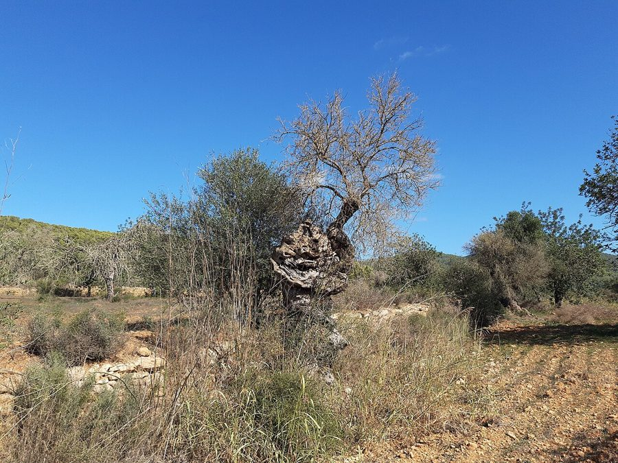
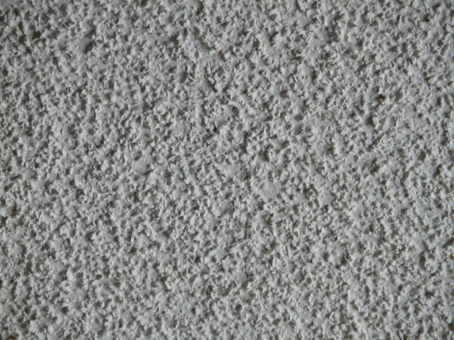
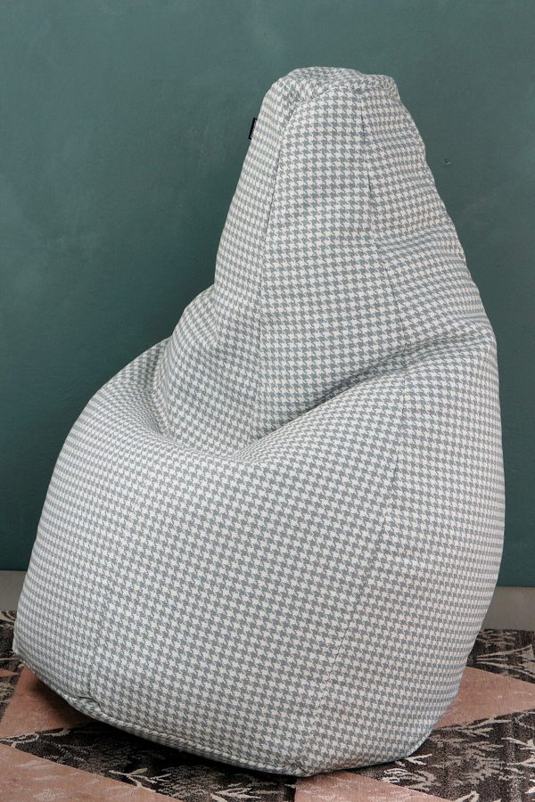
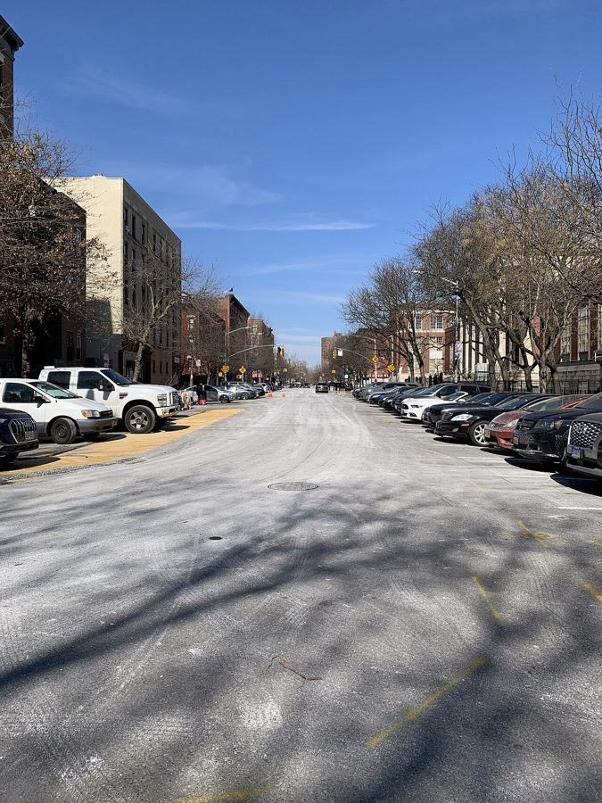

这一章在做什么
「最糟的一天」的下半场，和之后的几天。医生摸到肿块，说几乎肯定是癌。作者想起外婆的死，想起费曼和盖尔曼各自怎么面对癌症。结尾有两组对照：院子里的猫和老鼠，Ray 和他父亲。
难点是诊室里的医学用词和 Ray 的街头口语。这一章不给结论，接着往下读。
这一章的时间线
当天下午
诊所：等 40 分钟
医生摸到肿块
之后几天
恍惚，常哭
谁也没告诉
几天后
电话：验血阴性
医生：不说明什么
挂了电话
开车去 USC 查书
书上也这么说
傍晚回到家：豆袋椅、猫和老鼠、Ray 来了
本站示意图。第 12、13 段是插进来的回忆和联想（外婆、费曼、盖尔曼），不在这条线上。
背景：作者默认你知道的事
这一章没有物理。要补的是美国人看病的说法、七八十年代公寓里的东西，和 Ray 嘴里的纽约。
医生 Dr. Smiley-Face 书里没给名字。「笑脸医生」是作者起的外号：圆脸，几乎全秃，像个笑脸符号。
Ray Ramon 作者的邻居，收垃圾的，名字改过。这一章他第一次讲起自己的父亲。
康斯坦丁 Constantine 博士后，名字改过。只出现一句：他以为作者嗑药了。
作者的母亲 my mother 在波兰长大。第 12 段是她的少女时代：母亲病死，随后全家死于纳粹之手。
美国人看病：几个词，和 negative
clinic 是门诊诊所，不住院。看病要先约（appointment ），约了也常要等。be seen 是「被医生接诊」。doc 是 doctor 的口语。
第 11 段的验血查的是一种和这类肿瘤有关的激素。化验单上的 negative 是「阴性」，也就是没查出来。
日常英语
化验单上
negative = 负面的、不好的
positive = 正面的、好的
negative = 阴性：没查出来
positive = 阳性：查出来了
第 16、17 段
验血结果：阴性
作者：松了口气
医生：这项常常是阴性，
不说明什么
本站示意图。在化验单上，阴性通常是好消息。这一章的转折在于：医生说这项检查即使有病也常常是阴性，所以排除不了什么。
「这一年是癌症年」
第 13 段把三个人放在一起比。费曼：序言说过，1981 年他刚做完第二次癌症手术；他能治就治，心态平静。盖尔曼：他的妻子 Margaret 患癌，第 14 章写了她去世；他拼了命想救，慌乱和悲伤都写在脸上。第三个是作者自己，他还不知道自己会是哪一种。
第 15 段的「费曼盯着彩虹」指第 15 章里那一幕。作者说 That was me now ：现在轮到我这样看东西了。

一棵老橄榄树（摄于西班牙伊维萨岛，不是加州理工）。第 15 段的 craggy 说的就是这种疙疙瘩瘩的树干。第 1 章说过，加州理工校园里种着成排的橄榄树。
Gerda Arendt，CC0，维基共享资源 公寓里的两样东西

cottage-cheese ceiling，也叫 popcorn ceiling。
roskvape（Flickr），CC BY 2.0，维基共享资源 
beanbag chair，豆袋椅。
Daniela De Ponti，CC0，维基共享资源
cottage cheese 是一种带小颗粒的白色软奶酪。美国几十年前的公寓常把天花板喷成一粒一粒的白色疙瘩，便宜、遮丑，人们嫌它难看，就叫它「奶酪天花板」或「爆米花天花板」。作者说连墙和这种天花板相接的那条线都显得好看，是在说他看什么都珍贵了。
beanbag chair 是装满小颗粒的大布袋，人陷进去坐，年轻人廉价公寓里的标配。
猫、老鼠，和上一章的 God
院子里看到的
作者联想到的
猫
小老鼠
扑住
放开，再来
God
费曼
几次手术，却像在
享受剩下的日子
作者
和那只老鼠一样，
享受不了
toying with
本站示意图，画的是第 27、28 段的比方。
上一章费曼把实验叫作 God：它说了算，不讲情面。这一章 God 出现两次，都接着这个意思往下用。第 24 段指医生：他握着裁决权，说完就挂电话。第 28 段指命运：像猫玩老鼠一样摆弄人。两处都是比方和自嘲，不是在谈信仰。
Ray 的纽约：Spanish Harlem、ghetto、welfare

东哈莱姆的一条街，2022 年。Ray 说的是他父亲年轻时的事，比这张照片早几十年。
Deansfa，CC BY-SA 4.0，维基共享资源 Spanish Harlem 是纽约曼哈顿东北部的 East Harlem，二十世纪中叶起住的多是波多黎各等拉美裔移民，长期是穷人区。Ray 本名 Ramon，是西班牙语名字。
ghetto 在美国口语里指少数族裔聚居的贫民区。welfare 是政府发给穷人的救济金，on welfare = 吃救济。在他父亲眼里，学数学、当工程师是离开那里的唯一出路。
Ray 家：两个人
父亲
逼着学数学，答错就打
Ray
恨数学，可是很会
「九乘八？」POW!
作者：一个人演两个角色
当「父亲」：逼自己学
并不想学的东西
当「儿子」：答案出得不够快，
就挨自己的打
本站示意图，画的是第 42 段那句话。beat oneself up 是「狠狠自责」，这里正好和真的挨打对上。
Ray 带来的「药」是大麻。smoke 、pipe 、a light 、dope 这几个词在这一段都和它有关，见下面的词条。
词与短语
词条按在书里出现的顺序排。斜体小字是它所在的那句话里的几个词，方便你在纸质书上找到。
sterile, tacky
… was somewhere between sterile and tacky. …
冷冰冰的；俗气的
sterile 本义是无菌，引申为没有人味。tacky 是廉价、没品位。somewhere between A and B：介于两者之间。
be seen
… a forty-minute wait to be seen. As …
被（医生）接诊
不是「被看见」。The doctor will see you now = 医生现在可以给你看了。
inviting
… was round and inviting, like a …
让人想亲近的，和气的
形容词。不是「正在邀请」。
doc
… comfortable with this doc, which was …
大夫（doctor 的口语）
后半句是冷幽默：幸好我对他放心，因为他的手正放在那个地方。
choosy
… tend to be choosy about who …
挑剔的
choose + y。who I let do that：我让谁做这件事。
a funny question
… I thought it was a funny question. …
一个奇怪的问题
funny 这里是「怪」，不是「好笑」。作者还没明白医生在问什么。
lump
… “These lumps?” he said. …
肿块，疙瘩
日常词，不是医学术语。医生后面改口用的 mass 才是。
technically
… Technically, he said, they were just …
严格说来
不是「技术上」。先说一句名义上的说法，but 后面才是实话。suspicious 是「可疑的」。
publishable
… said, it could be publishable. I …
够得上写成论文发表
publish 在学术圈是发论文。医生的意思是：这个病例罕见到值得写一篇。
after all
… He was, after all, a past …
毕竟，别忘了
给上一句找理由：他兴奋，因为他是搞学术的。past president = 前任会长。
elevated
… if some hormone level was elevated. We …
（指标）偏高
化验单用语。hormone 是激素。
his radar picked up
… point his radar finally picked up that …
他总算察觉到
pick up 这里是「接收到信号」。把医生的察言观色说成雷达，是挖苦他迟钝。
clueless
… not some poor clueless dog in …
什么都不懂的
clue（线索）+ less。poor 是「可怜的」，不是穷。
brighten
… He suddenly brightened a bit and …
脸色、语气开朗起来
说人的时候是「高兴起来」，不是变亮。
prosthesis
… pills and a prosthesis would allow me …
假体
读 /prɑːsˈθiːsɪs/。假肢、假牙都是 prosthesis。
forget … and …
… To me, forget your pills and your …
一忘了……就……
祈使句 + and = 条件句：你要是忘了吃药，嗓音就高八度。这一整串当主语，谓语是后面的 is。your 是泛指。
go up an octave
… your voice goes up an octave is …
升高八度
octave 是音乐里的八度。
That was it
… That was it. In an instant, …
就这样了；一切到此为止
固定说法，表示「完了」「就这么定了」。不要去找 it 指什么。
excruciatingly
… slow death, and excruciatingly painful. There …
极其（痛苦）地
读 /ɪkˈskruːʃieɪtɪŋli/。几乎只和 painful 连用。morphine 是吗啡。
sleep over
… night when she slept over at a …
在别人家过夜
多指孩子去朋友家住一晚。
berate
… her father berated her for abandoning …
严厉斥责
eliminate
… years later Hitler eliminated her family, …
消灭，除掉
一个动词带三个宾语：家人、朋友，和「兼顾他们感受的必要」。第三个是故意并上去的：人都没了，也就不用再为难了。写得极冷。
the year for
… to be the year for cancer at …
……扎堆的一年
本是说收成、流行的话，如 a good year for wine 。用在癌症上是苦笑。
impending
… dealt with his impending death by …
即将到来的
多指坏事。prudent：稳妥的。
like crazy
… had fought like crazy to save …
拼了命地
口语，只表示程度。
last
… And how long would I last? I …
撑（多久）
动词：持续、活下去。不是「最后」。
the poor sap
… turn out to be the poor sap. …
那个可怜的倒霉蛋
sap 是口语里的傻瓜、冤大头。他一直在可怜费曼，结果该被可怜的是自己。
in a daze
… walked around in a daze after …
恍恍惚惚
go through the motions
… I went through the usual motions and …
照常把该做的动作做一遍
习语：人在做，心不在。
on drugs
… asked if I was on drugs. I …
嗑了药
on + 药物 = 正处在它的作用下。drugs 这里指毒品。
just assumed
… I think Ray just assumed. When …
直接就当我是（嗑了药）
assumed 后面省了「我嗑药了」。Constantine 还问一句，Ray 连问都不问。
sinking feeling
… with the sinking feeling it produced …
心往下沉的感觉
英语里这种感觉长在胃里（in my stomach）。
craggy
… Their beautiful craggy shape. Their …
嶙峋的，疙疙瘩瘩的
crag 是峭壁。这一段好几句没有动词，是一眼一眼看过去的写法。
off-white
… apartment where the off-white wall met …
米白色的
off 表示「偏离」：不是纯白。
cottage-cheese ceiling
… wall met the cottage-cheese ceiling. I …
喷成颗粒状的天花板
见上面的照片。
come back negative
… The blood test came back negative. The …
化验结果出来是阴性
come back：送去化验的东西「回来」了。negative 见上面的图。
shattered
… Ecstasy. But quickly shattered. …
被打得粉碎
四个短句都没有主谓，是心情一下一下地变。ecstasy：狂喜。
get a handle on
… I couldn’t get a handle on what …
弄明白，抓住头绪
handle 是把手。抓不到把手，就是无从下手。
a formality
… other ways. It’s a formality, really.” …
走个过场
不是「正式」。指只是手续，结果早已定了。医生等于在说：确诊只是形式。
biopsy
… “Will you take a biopsy?” …
活检
取一小块组织化验。读 /ˈbaɪɑːpsi/。
I’m afraid
… “I’m afraid this kind of mass …
很遗憾，恐怕
说坏消息前的客套，不是真的害怕。作者故意按字面接了一句：我看我比他更「怕」。
mass
… this kind of mass is always …
肿块（医学用语）
不是物理里的「质量」。
malignant
… mass is always malignant,” he said. …
恶性的
反义词是下一段的 benign（良性的）。
hang up on
… the conversation. God hung up on me. …
挂了我的电话
hang up 是挂电话；加 on someone 是「不等对方说完就挂」，有不客气的意思。
read up
… a book and read up all about …
查资料，把……研究一遍
通常说 read up on。USC 是洛杉矶的南加州大学；drive down 的 down 是「往南、往市区」，不是下坡。
benign
… an array of benign explanations. Like …
良性的
读 /bɪˈnaɪn/，g 不发音。an array of：一大排。cyst 是囊肿。
bunions of the balls
… Like cysts. Or bunions of the balls. …
「蛋上长的拇囊炎」
玩笑，没有这种病。bunion 是大脚趾根上鼓出来的包，不碍事；balls 是睾丸的俗称。他盼着查到一个这样无害的解释。
back someone up
… The books seemed to back him up. …
支持某人的说法
程序员熟悉的 backup 是另一个意思。
crouch and pounce
… way it would crouch and pounce, practicing …
伏低身子，然后猛扑
would 表示反复的动作。
toy with
… The cat was toying with a young …
玩弄，耍着玩
toy 作动词。后面说 God 对费曼也是 toying with。
shit happens
… a depressing reminder that shit happens. It …
倒霉事说来就来
美国俗语，粗口。意思是坏事会无缘无故发生，没有道理可讲。
dark clouds blanketing Mount Leonard
… dark clouds blanketing Mount Leonard,” he …
「伦纳德山」上乌云密布
没有这座山。Leonard 是作者的名字，Ray 学天气预报的腔调说：你脸色很难看。blanket 作动词：像毯子一样盖住。
it’ll do
… the medical profession, but it’ll do.” …
凑合能用，管用
do 这里是「够用、行」。That will do = 这就行了。
Screw …
… “Screw the medical profession,” I said. …
去他的……
粗口，比 f 开头那个词轻一点。和螺丝无关。the medical profession = 医生这一行。
a light
… “I need a light,” he said, …
火（点烟用的）
不是灯。Got a light? = 借个火。
rise out of the ghetto
… an engineer, rose out of the ghetto—we’re …
从贫民区里熬出头
句首省了 He。Ray 的话是街头口语，短句多，主语常省。
we’re talking …, man
… ghetto—we’re talking Spanish Harlem, man—and …
我说的可是……啊，老兄
we’re talking + 名词：强调「到了这种程度」。man 是口头称呼，对谁都能说。
on welfare
… math, or end up on welfare. So …
吃救济
end up = 最后落到。it was either A, or B：要么 A，要么 B。
pussy-footing around
… No pussy-footing around from my father, …
蹑手蹑脚，手下留情
像猫那样轻轻走路，引申为小心翼翼、不敢来真的。句尾 no sir 是加强语气：绝对没有。
badly
… me some. I needed it badly. …
非常，迫切地
和 need、want 连用时是「很想」，不是「糟糕地」。
dope
… forced me to smoke dope instead of …
大麻（俚语）
smoke dope = 抽大麻。那个年代的说法。
what the hell
… But what the hell, I like …
管它呢
不带问号时不是「搞什么鬼」，是「无所谓」。前一句的 cavort with 是「跟……混在一起玩」。
get to
… day, and I get to be outside.” …
有机会，得以
get to do = 有幸能做。不是「到达」。前面 get off work 是下班。
in one
… he and his father in one, forcing …
合为一体
A and B in one：一个人身上兼有两者。
beat oneself up
… and beating myself up when I …
狠狠自责
字面是把自己揍一顿，习语义是自责。这里两层意思都要。
值得停下来的句子
God hung up on me.
— 第 24 段。本站译：上帝挂了我的电话。
五个词。God 是医生。上一章费曼刚说过，实验就是 God，它只管宣布对错。作者把这个称呼搬到医生头上：他握着裁决，自己只能听着，连多问一句都来不及。
前一句 I figured I was more afraid than he was 是拿医生的客套话 I’m afraid 抬杠。两句都是苦中作乐。
I was both he and his father in one, forcing myself to study what I didn’t want to …
— 第 42 段，引了前半句。本站译：我一个人既是他，又是他父亲，逼着自己去学并不想学的东西……
both A and B in one 是主干；forcing … 是伴随状语，解释「怎么个合一法」。what I didn’t want to 后面省了 study。
这句话把上一章和这一章接上了：作者头一回对自己承认，弦理论是他逼自己学的。上一章老教授说「你有责任」，这里是他自己心里的那个老教授。
检查一下理解
先在心里答，再点开。答错的那题，回书里把对应段落再读一遍。
1. 医生说这个情况 could be publishable。作者为什么觉得他声音里有「兴奋」？
因为两侧同时长肿块极其罕见，罕见到可以写成病例发表。医生一时把作者当成了一个有价值的病例。作者说他是某学会的前会长，是在解释这种职业反应。作者当时太震惊，没顾上生气。
2. 第 11 段医生「开朗起来」安慰作者。他安慰到了吗？
没有。医生说的是切除之后靠激素药和假体可以过「接近正常」的生活。作者抓住 near-normal 这个词反问：忘了吃药嗓音就变，这离正常很远。他的结论是生活再也回不去了。
3. 验血结果是 negative。这是坏消息吗？后来为什么又不高兴了？
negative 是阴性，没查出异常，作者第一反应是狂喜。但医生接着说，这项检查经常是阴性，不能说明什么，诊断不变。所以叫 quickly shattered。作者追问「那为什么要做」，医生说只是想用最省事的办法确认。
4. 第 12 段最后说 Neither had I。作者没有忘记什么？
没有忘记母亲家里的痛。前一句说母亲至今没忘；Neither had I 是「我也没有忘」。外婆死于癌症、死得很痛苦，这件事通过母亲传到了他身上，所以癌症一直是他最怕的东西。这解释了他为什么垮得这么快。
5. 作者看猫，开头觉得可爱。后来看到了什么？他把谁比作老鼠？
猫不是独自练习，它爪子底下有一只活的小老鼠，抓了放，放了再抓。作者由此想到费曼的几次手术，也想到自己。区别在于：费曼虽然被这样摆弄，看上去仍在享受余下的日子；他觉得老鼠和自己做不到。
6. Ray 说他恨数学，又说自己数学好，两句都用 “That’s why …” 开头。原因是什么？这和作者有什么关系？
同一个原因。父亲用打的办法逼他练算术，所以他算得好，也所以他恨它。作者听了觉得说的是自己：他也在逼自己学不想学的东西，学不快就责备自己。只不过逼他的和挨打的是同一个人。